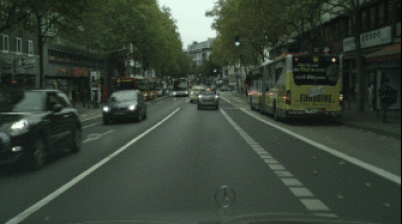

In this project, my main goal was to use Reinforcement Learning to learn a policy for the task of position tracking in quadrotor.
I used Twin Delayed Deep Deterministic Policy Gradient (TD3) algorithm with a 3 layered Neural Network to for both Policy and Critic Networks. I used Position, Orientation, Translational Velocity, Angular Velocity, Desired Position for states and actions were RPMs (motor speed) for each motor. The resulting policy seems to correlate with target position but has some error. Also, some times the policy oscillates around a target position due to unknown reasons. Further improvement in observation and reward can improve the performance and the previous issues of the policy. (Project Link)
Bipedal Walker
Through this project my aim was to test various Reinforcement Learning Algorithm for continouos control problem before they could be applied in research work. I used OpenAI Gym's Bipedal Walker Environment in this project. Due to the simplicity of this environment, the implementation and debugging of RL algorithm can easily be done. I used this environment for testing Neuroevolution of augmenting topologies (NEAT), Proximal Policy Optimization (PPO), Deep Deterministic Policy Gradient (DDPG), DDPG with parameter noise, Twin Delayed Deep Deterministic Policy Gradient (TD3).
This project tries to solve the control problem of Cartpole Balancing using Reinforcement Learning Methods. The environment used in this project is from OpenAI Gym's Cartpole Environment. It uses discreet action space (go left or go right) to control the cart which inturn balances the pole. I have used PPO and DDPG for this project
This project is based on the paper named "Deep Reinforcement Learning with Double Q-learning" (DDQN). It uses a Convolutional Neural Network to learn a Q function. This Q function can then be used to choose action which gave have best Q Value. For exploration, we sometime choose a random action, thus forming a Epsilon Greedy Policy. (Project Link)
Semantic Segmentation

This project was a part of my final year thesis. In this, a Convolutional Neural Network (EfficientNet) is used to learn semantic information from an RGB image of an Urban Scene. I used a method called tranfer learning to reduce computational burden. (Project Link)
Depth Estimation
This project was a part of my final year thesis. In this, a Convolutional Neural Network (EfficientNet) is used to learn depth information from an RGB image of an Urban Scene. During the training process, stereo image pair are used. During the inference, only one image is used to predict the Depth/Disparity map from an image. Tranfer learning is also used to reduce computational burden. (Project Link)
Face Mask Detection
This project was a part of my Internship Project. It is uses Haar Cascade and Convolutional Neural Network to determine if a Person has the Covid Mask On or not. (Project Link)
Face Detector
In this project we use OpenCV and HaarCascade for face detection.(Project Link)